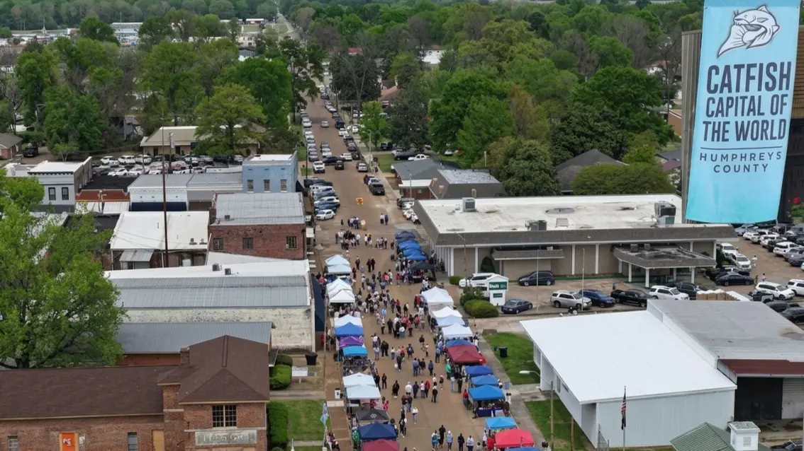
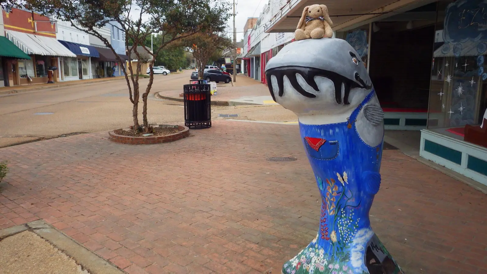

Drive into Belzoni, Mississippi on any ordinary weekday and you'll be greeted by a large orange sign that announces, without apology, that you have arrived in the Catfish Capital of the World. Dozens of fiberglass catfish sculptures — painted in overalls, dresses, and delta blues motifs — stand sentinel along the worn sidewalks of a town of about 2,000 people. For most of the year, it's a quiet declaration. On April 11, 2026, that declaration becomes a party. The 49th Annual World Catfish Festival takes over downtown Belzoni from 9 a.m. to 4 p.m., and if you've never made the trip, this is the year to understand what you've been missing.
What Is the World Catfish Festival?
The festival's story begins in 1976 — the same year that Mississippi Governor Cliff Finch officially named Humphreys County the Catfish Capital of the World. That designation wasn't ceremonial flattery. By the mid-1970s, Humphreys County held over 6,000 acres of catfish ponds, more than any other county in the United States, and the Delta's flat alluvial soil and abundant water from the Yazoo River basin had made commercial aquaculture both viable and enormously profitable. Local farmers had pioneered the transformation of catfish — long dismissed as a bottom-feeding river fish — into a clean, farm-raised product that would eventually conquer restaurant menus across the country.
The first festival was held on April 8, 1976, drawing around 3,000 visitors to the small city's courthouse grounds. It was, from the start, a celebration of an industry that had transformed the region's economy and its identity. Half a century later, with 48 festivals now behind it, the event draws upwards of 10,000 attendees from across Mississippi and beyond. It has been named one of the Top 100 Events in North America and a Top 20 Event in the Southeast. That growth is a testament not merely to catfish, but to the stubborn civic pride of a community that has held the festival through good economic years and difficult ones alike.
What to Expect: The Full Festival Experience

More than 100 vendor booths fill several blocks of downtown Belzoni each year.
The festival is anchored by the thing that made Belzoni famous: catfish. Vendors from across Mississippi set up food stalls serving fried catfish in every form imaginable, and the world's largest fish fry has become a signature draw in its own right. Beyond the catfish, the food offerings span a wide range of Mississippi Delta cooking, making the festival something of an informal survey of the state's culinary character.
More than 100 arts and crafts vendor booths fill several blocks of downtown, offering handmade goods, regional art, and souvenirs. Live musical entertainment runs throughout the day, with performers spanning blues, country, and gospel — genres that are not incidentally also native to the Mississippi Delta. The Humphreys High School marching band is a regular presence, performing on the courthouse grounds and adding a particular hometown quality to the proceedings.
Festival Highlights at a Glance
- Miss Catfish & Little Miss Catfish Pageant — The crown jewel of the festival. Contestants are judged not on appearance but entirely on their knowledge of the catfish industry. The pageant is highly competitive and draws serious contenders from across the region.
- Catfish Eating Contest — A crowd favorite with a cash prize. Competitors take their places on the courthouse steps while the crowd gathers around — expect noise, enthusiasm, and impressive volume.
- 100+ Arts & Crafts Vendors — Handcrafted goods, regional art, Delta-made products, and food stalls filling multiple city blocks.
- Live Music All Day — A rotating stage featuring blues, country, gospel, and more. The Humphreys High School marching band performs annually.
- World's Largest Fish Fry — The headliner. Thousands of pounds of catfish, fried fresh throughout the day.
- Children's Zone — Inflatables, carnival games, a petting zoo, and costumed characters. No admission charge for children 10 and under.
The Miss Catfish pageant deserves special mention because it is genuinely unlike most pageants. Contestants compete based solely on their knowledge of catfish farming, aquaculture science, and the industry's significance to Mississippi's economy. Clara Ann Yates, the 2024 Miss Catfish, described her years of watching the pageant as a child from Yazoo County and finally competing for three years before winning. The crown carries real meaning here. It represents a community's relationship to an industry that defined the region for generations.
The Cultural Story Behind the Catfish Capital

Dozens of painted fiberglass catfish sculptures dot downtown Belzoni — a public art project launched in the early 2000s.
To understand why this festival matters, you need to understand what catfish farming actually meant to Humphreys County and the Mississippi Delta. The industry didn't exist in any commercial form before the 1960s. What farmers in this region essentially did was rebrand a fish — one long associated with river mud and poverty — into a premium farm-raised product sold to upscale restaurants. That transformation is still considered one of the more remarkable marketing turnarounds in American agricultural history. At the industry's peak in the 1970s and 1980s, Belzoni reportedly had more millionaires per capita than any other city in Mississippi, with wealth flowing directly from catfish ponds.
"For some people the catfish industry is their life; it's all they've ever known. So you go to towns, and for a lot of the kids, their parents, aunts and uncles all work at catfish farms."
By 2024, Mississippi remained the nation's leading catfish producer, generating around $214 million in farm sales and ranking catfish as the country's seventh-largest agricultural commodity. But the path here was not without turbulence. In the early 2000s, competition from cheaper imported fish from Vietnam put severe pressure on Delta farmers. Many smaller operations folded. The acreage under catfish production in Humphreys County fell sharply. Some processing plants closed permanently. The county never fully recovered economically, and the festival today takes place against a backdrop of genuine hardship — a poverty rate that has stayed above 40 percent, a declining population, and the lingering effects of industry contraction.
That context is not a reason to stay home. It is, in fact, a reason to go. When you buy a plate of catfish in downtown Belzoni, you are participating in a local economy that still depends on visitors showing up in April. When you watch the Miss Catfish pageant, you are watching a community perform its own history — seriously, proudly, and with real competitive stakes. The festival has outlasted the industry's golden years by decades, which says something about what the people of Belzoni are actually celebrating. It is not just a fish. It is a story about who they are.
Practical Information for Your Visit
Getting There: Belzoni sits in the heart of the Mississippi Delta, accessible via Highway MS-12 from the east, Highway MS-7 from the north, and Highway US-49W from the south. From Jackson, the drive is approximately 90 minutes heading northwest. Spring Delta weather is typically mild but can shift quickly — check conditions before departure and download the MDOT app for road updates. The festival runs rain or shine.
Parking: On-street parking near the festival grounds fills up quickly, and Belzoni's compact downtown layout means competition for spots is real. The most reliable strategy is to park several blocks away from the courthouse grounds and walk in. Festival officials typically post parking guidance in the days before the event — follow the World Catfish Festival's Facebook page for updates. There is no public transportation available in Belzoni; you will need your own vehicle.
Admission: $5 for adults; free for children 10 and under. Cash is recommended, though many vendors accept cards.
Medical: The nearest hospital is approximately 35 miles away in Greenwood. For emergencies, dial 911.
Tips for Families with Children
- Arrive by 9 a.m. — Crowds build steadily through mid-morning. Getting there early means easier parking, shorter food lines, and better access to the children's zone before it fills up.
- The kids' zone is free — Inflatables, games, a petting zoo, and character appearances are all included. Children 10 and under also get in free.
- Watch the pageant and the eating contest — Both are highly family-friendly spectacles. The eating contest in particular draws enthusiastic crowd participation and is a genuine highlight for kids.
- Bring cash — Many vendors are cash-preferred. An ATM may not always be convenient in downtown Belzoni.
- Dress for Delta spring — April in the Mississippi Delta is typically warm and humid, but afternoon showers can appear quickly. A light layer and comfortable walking shoes are both wise.
- Explore the sculptures — The fiberglass catfish statues scattered around downtown are a hit with children and make for great photos. Pick up a map of the Catfish on Parade sculptures and turn it into a scavenger hunt.
Why Make the Trip
There are plenty of spring festivals in Mississippi, and a number of them are bigger. The World Catfish Festival is not trying to be something it isn't. It's a downtown celebration in a small Delta city, rooted in a specific industry and a specific community, and that specificity is precisely what makes it worth visiting. You won't find this festival replicated anywhere else. The eating contest, the Miss Catfish pageant, the live blues drifting across courthouse grounds, the smell of fried fish competing with the smell of April air — it is a combination that exists only here, only once a year, and only because the people of Belzoni have kept it alive for nearly half a century.
For first-time visitors, the festival is also a gateway into a part of Mississippi that most people pass through without stopping. The Catfish Museum in downtown Belzoni tells the full story of the industry and is worth a visit before or after the main event. Wister Gardens, a local botanical site, is nearby. And the fiberglass catfish of the Catfish on Parade project — each one individually designed and sponsored — are scattered across the city like a public art museum you navigate on foot.
The 49th Annual World Catfish Festival will be held on April 11, 2026, in downtown Belzoni, Mississippi. Admission is $5. The gates open at 9 a.m. and close at 4 p.m. For additional information, visit catfishcapitol.com or follow the World Catfish Festival on Facebook.